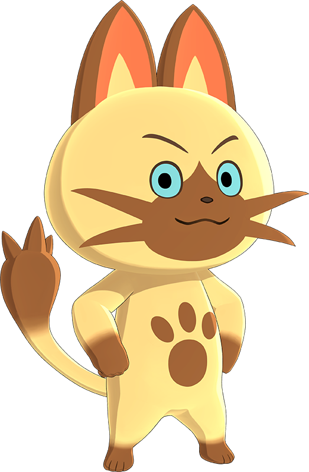

Pochi the Cat

Introduciton
A globe-trotting Felyne with an unforgettable face. You meet each other as he travels around, trying to discover the cause of the strange happenings. He is an adventurous and positive partner who acts as your guide, determined to help you as you endeavor to become a Rider
Profile
- favorite food-Donut
- Background
Not much is originally known about Navirou's past due to his amnesia. In the past, he met and befriended the fellow Felyne Orgo, before the two lost sight from one another.
Navirou used to be a normal Felyne until he, along with many others, were kidnapped by the mad scientist Doctor Manelger who experimented on him. The constant modifications led to him acquiring the ability to transform into a Felyne that can use the Thunder Element. It was there he befriended the Numbers, the other Felynes modified like him and became part of their group as Number 5, named after the number of his experiment. Initially, with the Number's help, he was planning to escape with them and the other imprisoned Felynes but when he went ahead of them to plan the escape route, he fell into the ocean and almost drowned, with the trauma making him lose most of his memories.
While the other Numbers were waiting for his return, Navirou was swept by the currents, and awoke on the shores of Koapni Village, an island village of Felyne, where he was saved and taken care of by one of the resident Felyne, Pansy, and the village's caretaker, Chief Mallerie. He soon befriended and became particularly close to the village Felynes, like the gang boss Tiger and Pansy; however, when Pansy was attacked by Jaggi, Navirou instinctively used his thunder powers for the first time since his amnesia, confusing him greatly. Furthermore, Tiger misunderstood, and belived that he had put Pansy in danger; as such, due to the trouble he thought he was bringing to her and the village due to his strange abilities he longer understood the origin of, Navirou decided to leave in the middle of the night on a journey without saying goodbye to anyone, which ironically made Tiger even more upset due to Pansy's sadness over Navirou's disappearance.
His travels around the world made him knowledgeable on various topics, and would eventually bring him to Hakum Village where he met the novice Rider, Lute. Adopting his new name, "Navirou", he elected to be a navigator to the novice rider, becoming in the process involved in their efforts to stop the dreaded Black Blight from spreading.
After travelling the world with Lute, eventually solving the crysis brought by the Black Blight, Navirou, having temporarily parted ways with his old buddy found himself in Hakolo Island, where he met another novice rider. Deciding to stick around them to teach them the basics, Navirou soon became once again entangled in another world-ending crysis, involving a supposedly apocalyptic Rathalos, Razewing Ratha, as well as the mystery of the Rage-Rayed monsters.
- it is explained that his ability to use the Thunder Element is from Manelger splicing Zinogre Genes onto him.
He also goes through a Rite of Channeling and obtains the abilities of a Congalala.
He is the only one of The Numbers with the ability to transform between a normal and a charged form. This is similar to Zinogres themselves, who shift from normal forms to electrically charged ones when enraged.
Likely due to his altered genetics, Navirou's fur does not trigger Alwin's allergy to Felynes.
Links
- Seattle Animal Contro; Shelter
- Humane Soceity of the United States
Vital Statistics
| Age |
Weigtht |
Eye Color |
| 1 month | 1.5 pounds |
blue |
| 1 year |
8 pounds |
yellow |
| 2 years |
9 pounds |
yellow |
Last uptdated om=n 24 June 2013 by Pochi thw Cat